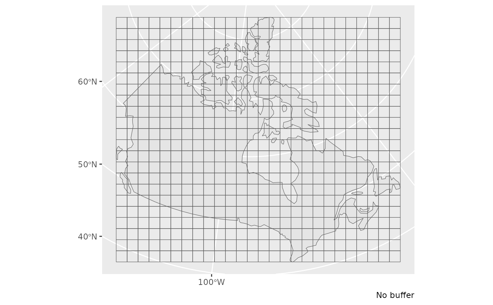

Create grid across Canada
grid_canada(cell_size = 200, buffer = 500)Numeric. Size of grid (km) to use when creating grid.
If using this grid as input to cosewic_ranges(), should use default
COSEWIC grid size of 2.
Numeric. Extra buffer (km) to add around the outline of Canada before calculating grid.
sf data frame with polygon grid
gc <- grid_canada(200)
gc_buff <- grid_canada(200, buffer = 0)
# Plot to illustrate
library(ggplot2)
ggplot() +
geom_sf(data = map_canada()) +
geom_sf(data = gc, fill = NA) +
labs(caption = "200km buffer")
ggplot() +
geom_sf(data = map_canada()) +
geom_sf(data = gc_buff, fill = NA) +
labs(caption = "No buffer")
